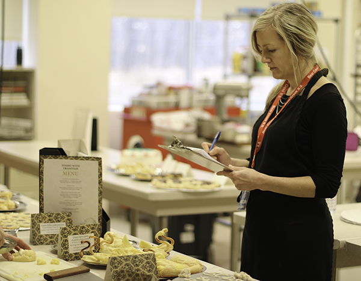

Fun Facts
- Bradford District High School had a population of exactly 1100 students in January of 2018 (source: BDHS Exposure 2017-2018 [yearbook] ).
- The school has a brand new elevator, and has three portables this year due to rapid growth in the area.
- I was the school photographer on multiple occasions, as seen in the photos below.
| Event | Date | Photo | Description |
|---|---|---|---|
| School BBQ | June 2018 |

|
Bradford District High School has a BBQ on the last day of classes. The day is split in two, and typically runs a condensed schedule in the morning, then allows for students to leave the classroom and enjoy their time with their friends on the front yard. Admission is typically $2, and everyone that attends the school is welcome. |
| Colour Run | May 2018 |
|
The Colour Run is a mental health fundraiser created the Bradford District High School Student Council, along with various local businesses to raise awareness and donate money to the Canadian Mental Health Association. A fun stress-reliever close to exam season, and a reason for the school to band together for good times, good food, and to throw coloured powder at each other. |
| Spring Fling | May 2018 |
|
The spring fling is a smaller event made for the younger demographic at the school. This event has run for the previous two years to limited success. |
| Skills Canada | April 2018 |

|
Skills Canada is a big deal. Seriously. With competition from all over the country, Gabe Langford managed to scrape Bradford District High School into the top 3 for Cabinet Making. Gabe has been taken under the wing of Mr. Mark Lee, one of the more outgoing teachers in BDHS. |
| TLLP Video (I made) | March 2018 |
|
This video was created to justify the spending of a TLLP experiment. This experiment included using various technologies in the classroom environment to get more positive engagement from students, as well as the attempt of using wobble stools for the more active students in teh class to retain focus. Run by Mrs. Joanne Bridgeman-Sparks and Ms. Amy James-Popowich, this project was seen as insightful, and has been played at various conferences both locally and internationally. The author of the website (Brett Petch was involved in this project. |
{kind=link}
{kind=link}
{kind=link}